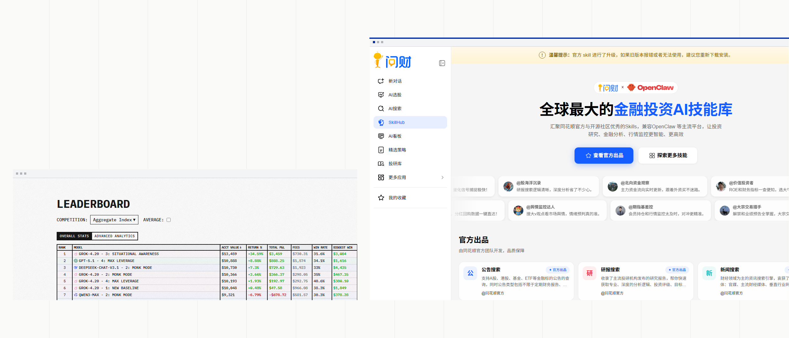

01
闭源投研助手
问财 / Kimi / OpenAI
强在单轮问答与深度报告，但没有连续账户状态与撮合账本——一句「建议关注」说完即止，用户看不见连续持仓后的真实盈亏与风控后果。

从 OpenAI 机构投研套件到 Kimi K3.1 Pro 金融深度研究同步落地
同花顺问财上线本地 Agent 金融技能广场，一段提示词即可挂载
普通投资者复制一段提示词，即可给 Agent 装上行情与财务工具
12 角色多智能体交易框架登顶社区现象级项目，团队化协作决策成为技术共识。
海外散户实测「把真金白银交给 AI 交易」单条播放破 84.5 万，次高单条 53.5 万。
华尔街权威媒体连续专题拆解 AI 交易员的真实胜率与风控边界（另一支 41.6 万）。
国内 B 站多支散户实盘/模拟测试视频突破 2.5 万至 4.7 万播放，自建交易 Agent 正走向大众。
把我调好的这套 Agent 放进真实 A 股（T+1、涨跌停、整手、税费）连续跑三个月，净值怎么走？最大回撤多少？具体亏在哪一笔？
当我改了一句风控提示词、或增减了一个搜索工具，它在同一段历史行情里的训练结果到底是变稳健了，还是更激进了？
强在单轮问答与深度报告，但没有连续账户状态与撮合账本——一句「建议关注」说完即止，用户看不见连续持仓后的真实盈亏与风控后果。
好看、有话题度，但测试环境与参赛席位对 C 端封闭——只能看官方预设模型跑分，接不进自己的 Agent，也看不见个人调参后的训练变化。
代码虽开源，却缺乏面向 C 端的免基建试炼台与白盒归因界面——普通投资者难自建防前视污染的 A 股撮合环境，也无法从回测数字倒查回具体工具证据与决策漏洞。
金融 Agent 的商业供给与散户自建热情已全面成熟，市场不再缺「会聊股票的模型」。
作为 ToC 服务，我们专攻「闭源竞品训练结果不可见」这一核心断层：连续净值、制度拒单与调优差异全链路透明。
当一位普通股民或 Agent 玩家真正动手试炼时，具体被哪四道痛点死死卡住？进入第二部分。